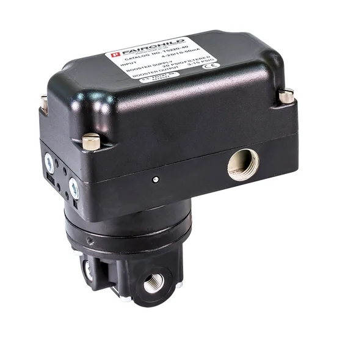
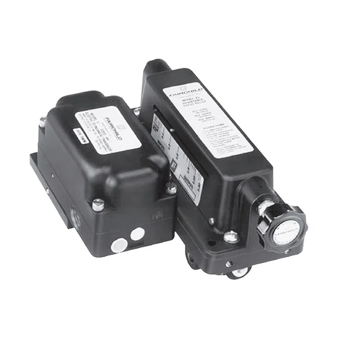
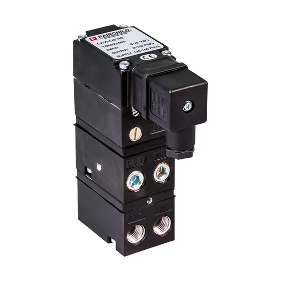
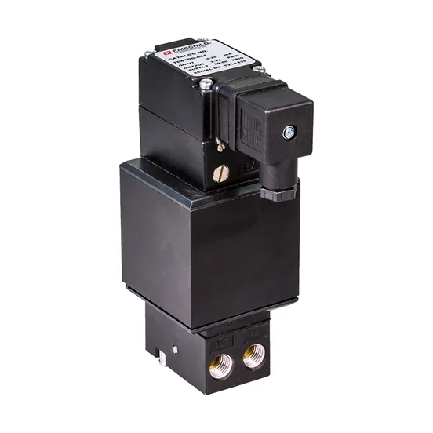
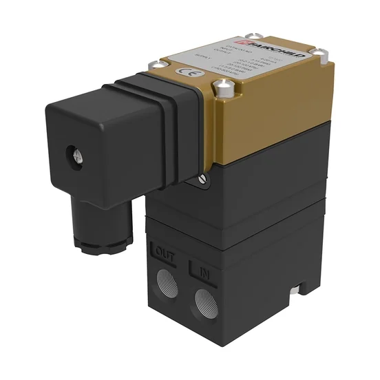
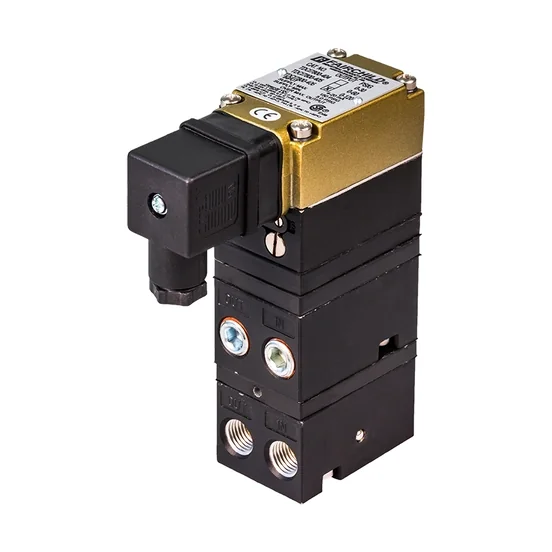
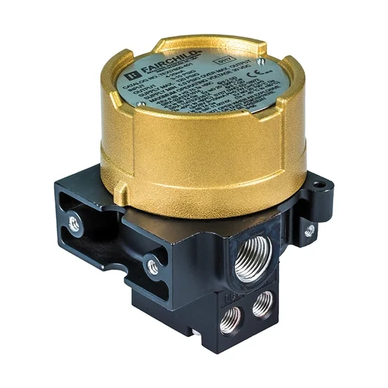
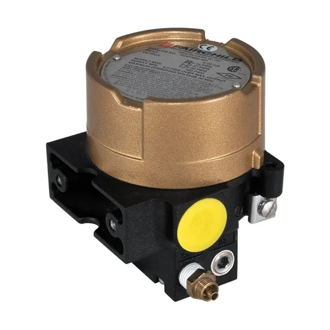

FAIRCHILD - Transducers
As a fast response high flow I/P, E/P transducer, the T5220 has all the performance you want in a voice coil I/P transducer product, but it also includes a built in booster section to deliver high flow capacity, up to 45 SCFM (76.5 m3/HR) with six available ranges to allow pressu

Ảnh sản phẩm chính thứcFAIRCHILD - Transducers model
T5220
Rotork Fairchild Model T5220 Fast Response High Flow E/P, I/P Pressure Transducer
Xem model →
T5221
Rotork Fairchild Model T5221 Adjustable Ratio, E/P, I/P Pressure Transducer
Xem model →
T5700
Rotork Fairchild Model T5700 High Flow E/P, I/P Pressure Transducer
Xem model →
T6000
Rotork Fairchild Model T6000 Compact E/P, I/P Pressure Transducer
Xem model →
T6100
Rotork Fairchild Model T6100 Lock in Place I/P Pressure Transducer
Xem model →
T7500
Rotork Fairchild Model T7500 Compact E/P, I/P Low Pressure Transducer
Xem model →
T7800
Rotork Fairchild Model T7800 Compact E/P, I/P Pressure Transducer
Xem model →
TXI7800
Rotork Fairchild Model TXI7800 Explosionproof I/P Pressure Transducer
Xem model →
TXI7850
Rotork Fairchild Model TXI7850 Moisture Resistant I/P Pressure Transducers
Xem model →Thư viện tài liệu range
Datasheet, manual, brochure và certificate lấy từ nguồn chính thức Rotork.